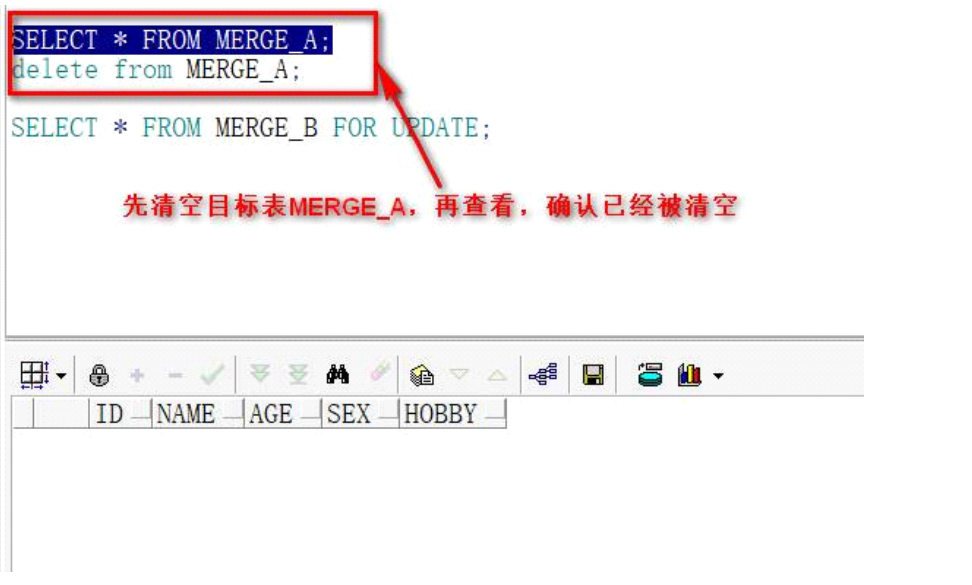

Oracle常见问题
1、truncate表出现错误，oracle扩展sql
truncate表时提示表正忙，说明此表正在被其他程序操作：
解决办法，关闭ESB应用服务器上的5个启动进程，flow、journal、smart、console、mom。关闭后重新truncate即可。
2、oracle的锁和死锁
锁：数据库中的锁为DML锁，即针对表数据的锁。
DML锁又可以分为：行锁、表锁、死锁。
行锁：当事务执行数据库插入、更新、删除操作时候，该事务自动获得操作表中操作行的排它锁（独占锁）；
表锁：当事务获得行锁后，此事务也将
ORA-00054：资源正忙，要求指定NOWAIT?
解决办法：
1. 查询数据库中的锁
select * from v$lock;
-- 查询数据库中被锁住的锁
select * from v$lock t where t.block = 1;
2. 查询被锁的对象
select t.session_id from v$locked_object;
3. 查询阻塞
-- 查询被阻塞的会话
select * from v$lock t where t.lmode = 0 and t.type in('TM','TX');
-- 查询阻塞别的会话的会话锁
select * from v$lock t where t.lmode > 0 and t.type in('TM','TX');
4. 数据库正在等待的被锁对象的进程号
select * from v$session t where t.lockwait is not null;
5. 查询会话之间锁等待的关系
select a.sid holdsid,b.sid waitsid,a.type,a.id1,a.id2,a.ctime from v$lock a,v$lock b where a.id1 = b.id1 and a.id2 = b.id2 and a.block = 1 and b.block = 0;
6. 查询锁等待的事件
select * from v$session_wait t where t.event = 'enqueue';
整体解决步骤：
-- 找出被锁的对象，获取session_id，即被锁的会话号
select t.session_id from v$locked_object;
-- 从会话表中查询出被锁的进程号码，条件中的session_id是上面查询出来的session_id
select t.sid,t.serial#,t.username,t.osuser from v$session where t.sid = session_id；
-- oracle使用下面语句，执行解锁，其中sid,serial#是上面语句中查询出来的，杀死会话
alter system kill session 'sid,serial#'
注意：
一些oracle中的进程被杀掉后，状态被重置为”killed”，但是锁定的资源很长时间不释放，有时候实在没办法，只能重启数据库。现在提供一种方法解决这种问题，那就是在oracle中杀不掉的，在os级别再杀。
（1）、下面的语句用来查询哪些对象被锁：
select object_name,machine,s.sid,s.serial# from v$locked_object l,dba_objects o,v$session s where l.object_id = o.object_id
and l.session_id = s.sid;
（2）、下面的语句用来杀死一个进程：
alter system kill session ‘sid,serial#’; --sid,serial#是上面查询出来的oracle进程号；
（3）、如果利用上面的命令杀死一个oralce进程后，进程状态被重置为”killed”，但是锁定的资源很长时间没有被释放，那么可以在os一级再杀死响应的进程（线程），首先执行下面的语句获得进程（线程号码）:
select pid,osuser,s.program from v$session s,v$process p where s.paddr = p.addr and s.sid = sid; --sid是上面查询出来的
（4）、在os上面杀死这个进程（线程）：
在unix上，用root登录，执行：kill -9 spid（即第三步的spid）
3、 数据库未正常关闭， 使用PLSQL登录时显示not logged on，oracle扩展sql
查看oracle进程：
[oracle@ZHAO ~]$ ps -ef|grep ora_dbw0_
oracle 36907 1 0 21:04 ? 00:00:00 ora_dbw0_orcl
oracle 37899 37862 0 21:46 pts/0 00:00:00 grep ora_dbw0_
kill掉进程：
[oracle@ZHAO ~]$ kill -9 36907
重新查看进程：
[oracle@ZHAO ~]$ ps -ef|grep ora_dbw0_
oracle 37901 37862 0 21:46 pts/0 00:00:00 grep ora_dbw0_
重新连接oracle即可正常启动oracle：
[oracle@ZHAO ~]$ sqlplus / as sysdba
SQL*Plus: Release 11.2.0.1.0 Production on Sun Jul 16 21:47:11 2017
Copyright (c) 1982, 2009, Oracle. All rights reserved.
Connected to an idle instance.
SQL> startup;
ORACLE instance started.
Total System Global Area 626327552 bytes
Fixed Size 2215944 bytes
Variable Size 398462968 bytes
Database Buffers 222298112 bytes
Redo Buffers 3350528 bytes
Database mounted.
Database opened.
4、 Linux操作系统和数据库乱码问题解决，oracle扩展sql
1. 描述，oracle扩展sql
当部署好Oracle、SmartESB、Monitor后，启动MOM，Console，Esb、journal，Flow后，会发现Console页面是乱码！
原因：数据库乱码原因导致，即数据库里面插入的数据insert进去的就是乱码！
2. 解决办法，oracle扩展sql
(1) 目的：统一三方面的编码格式
Linux系统的编码格式
Oracle11g服务器的编码格式
OracleClient的编码格式
只有确保这三方面的编码格式最好保持一致，就能够解决数据库的乱码问题
(2) 查看Linux系统的编码格式
# #切换到oracle用户
#su - oracle
oracle 的密码：******
$vi .bash_profile
export LANG=zh_CN.utf8 //设置Linux环境中其他程序的字符集，对其他程序有效(即Linux系统的编码格式)
export NLS_LANG=AMERICAN_AMERICA.AL32UTF8
或者
export NLS_LANG=SIMPLIFIED CHINESE_CHINA.ZHS16GBK
//设置数据库客户端字符集，只对Oracle程序有效。（注意，如果是通过linux系统insert进去的数据，必须配置linux服务器的编码格式）
(3) 查看Oracle数据库Server端的编码格式
oracle用户下
查看：
服务器端的字符集
方式1：
SQL> select userenv('language') from dual;
USERENV('LANGUAGE')
--------------------------------------------------------------------------------
AMERICAN_AMERICA.UTF8
方式2：
SQL> select * from nls_database_parameters where parameter='NLS_CHARACTERSET';
PARAMETER
--------------------------------------------------------------------------------
VALUE
--------------------------------------------------------------------------------
NLS_CHARACTERSET
WE8MSWIN1252
(4) 查看数据库Client端的编码格式
客户端的字符集【su - oracle 在 .bash_profile文件中配置export NLS_LANG】
SQL> select * from nls_instance_parameters where parameter='NLS_LANGUAGE';
PARAMETER
--------------------------------------------------------------------------------
VALUE
--------------------------------------------------------------------------------
NLS_LANGUAGE
AMERICAN
(5) Linux系统和Oracle客户端的编码格式修改：
很好修改，只需要修改配置文件即可：
# #切换到oracle用户
#su - oracle
oracle 的密码：******
$vi .bash_profile
export LANG=zh_CN.utf8 //设置Linux环境中其他程序的字符集，对其他程序有效(即Linux系统的编码格式)
export NLS_LANG=AMERICAN_AMERICA.AL32UTF8 //设置数据库客户端字符集，只对Oracle程序有效
(6) OracleServer端的编码格式修改：
修改：
SQL> shutdown immediate;
Database closed.
Database dismounted.
ORACLE instance shut down.
SQL> startup mount;
instance started.
Total System Global Area 626327552 bytes
Fixed Size 2215944 bytes
Variable Size 398462968 bytes
Database Buffers 222298112 bytes
Redo Buffers 3350528 bytes
Database mounted.
SQL> ALTER SYSTEM ENABLE RESTRICTED SESSION;
System altered.
SQL> ALTER SYSTEM SET JOB_QUEUE_PROCESSES=0;
System altered.
SQL> ALTER SYSTEM SET AQ_TM_PROCESSES=0;
System altered.
SQL> ALTER DATABASE OPEN;
Database altered.
SQL> ALTER DATABASE CHARACTER SET INTERNAL_USE AL32UTF8;
Database altered.
SQL> SHUTDOWN IMMEDIATE;
Database closed.
Database dismounted.
ORACLE instance shut down.
SQL> STARTUP;
ORACLE instance started.
Total System Global Area 626327552 bytes
Fixed Size 2215944 bytes
Variable Size 398462968 bytes
Database Buffers 222298112 bytes
Redo Buffers 3350528 bytes
Database mounted.
Database opened.
(7) 重新跑数据库脚本
上述编码修改统一后，重新跑一下数据库脚本，即可解决Console页面乱码问题！
总结：一般都不需要修改oracle的服务端编码，而是将linux和client的编码按照oracle server端的编码配置保持一致即可。
5、 数据库连接数，oracle扩展sql
什么是数据库连接数？什么是数据库连接池？如何查询数据库连接数？
数据库连接数：也就是一个数据库服务器，同时能够接受多少个并发客户端的连接访问。
数据库连接池：原始的每个客户端与数据库建立连接，都需要创建连接、执行SQL、关闭、释放连接等一系列操作，非常消耗资源，于是数据库连接池出现了，连接池中预先打开一定数量的数据库连接，并维持着连接，然后客户端直接拿连接、执行完sql再还回去即可。
1. 查询数据库连接数,登录sqlplus使用三种方式查看：
SQL> select count(*) from v$process; --查询数据库当前进程的连接数
SQL> select value from v$parameter where name = ‘processes’; --查询数据库允许的最大连接数
SQL> show parameter process; --同上
注意：数据库的连接数和ESB应用的线程池是两个概念，两者没有关系
2. 如何设置数据库服务器的最大连接数，oracle扩展sql
登录sqlplus客户端
SQL> alter system set processes = 1000 scope = spfile;--设置数据库的最大连接数为1000
注意，修改完连接数之后需要重启数据库。
shutdown immediate;
startup mount;
6、 Oracle中关于date类型数据的时间处理，oracle扩展sql
给你发个材料：无论是DATE还是timestamp都可以进行加减操作。
可以对当前日期加年、月、日、时、分、秒，操作不同的时间类型，有三种方法：
1 使用内置函数numtodsinterval增加小时，分钟和秒
2 加一个简单的数来增加天
3 使用内置函数add_months来增加年和月
对当前日期增加一个小时：
SQL> select sysdate, sysdate+numtodsinterval(1,’hour’) from dual ;
SYSDATE SYSDATE+NUMTODSINTE
——————- ——————-
2010-10-14 21:38:19 2010-10-14 22:38:19
对当前日期增加50分种:
SQL> select sysdate, sysdate+numtodsinterval(50,’minute’) from dual ;
SYSDATE SYSDATE+NUMTODSINTE
——————- ——————-
2010-10-14 21:39:12 2010-10-14 22:29:12
对当前日期增加45秒:
SQL> select sysdate, sysdate+numtodsinterval(45,’second’) from dual ;
SYSDATE SYSDATE+NUMTODSINTE
——————- ——————-
2010-10-14 21:40:06 2010-10-14 21:40:51
对当前日期增加3天:
SQL> select sysdate, sysdate+3 from dual ;
SYSDATE SYSDATE+3
——————- ——————-
2010-10-14 21:40:46 2010-10-17 21:40:46
对当前日期增加4个月:
SQL> select sysdate, add_months(sysdate,4) from dual ;
SYSDATE ADD_MONTHS(SYSDATE,
——————- ——————-
2010-10-14 21:41:43 2011-02-14 21:41:43
当前日期增加2年:
SQL> select sysdate, add_months(sysdate,12*2) from dual ;
SYSDATE ADD_MONTHS(SYSDATE,
——————- ——————-
2010-10-14 21:42:17 2012-10-14 21:42:17
timestamp的操作方法与上面类似。
求两个日期之差：
例：求2007-5-23 21：23：34与当前时间之间的差值。
SQL> select sysdate-to_date(’20070523 21:23:34′,’yyyy-mm-dd hh24:mi:ss’) dt from
dual ;
DT
———-
1240.01623
如果两个日期直接相减，得到的结果是一个数据型，我们可能想要得到两个日期相差值表现形式为：**年**月**日 **:**:**
SQL> SELECT NUMTOYMINTERVAL(MONTHS_BETWEEN(DT1, DT2), ‘month’) mon,
2 numtodsinterval(dt1-(add_months(dt2,trunc(MONTHS_BETWEEN(DT1, DT2)))
),’day’) DAY
3 FROM (SELECT SYSDATE DT1,
4 TO_DATE(’20070523 21:23:34′, ‘yyyy-mm-dd hh24:mi:ss’) DT2
5 FROM DUAL)
6 ;
MON DAY
—————- ———————-
+000000003-04 +000000021 00:40:15.999999999
即：3年 4 个月 21 天 00:40:15.99999999
7、 oracle中的DATE,DATETIME,TIMESTAMP三种类型
DATE类型在oracle中是可以直接加减数字进行运算的，也可以直接比较大小。
1. set define off; ，oracle扩展sql
set define off; --关闭替代变量功能
set define on; --开启替代变量功能
set define %; --将默认替代变量标识符修改成%（也可以修改为其他字符）
2. Oracle用户被lock导致无法登陆，oracle扩展sql
当用plsql等第三方工具登陆oracle数据库时，如果连续10次输错密码，则相对应的用户会被lock，导致无法登陆数据库，此时需要解锁：
Linux命令行使用sqlplus命令窗口
sqlplus / as sysdba
8、 oracle外表
1. 什么是外表？
外表是外部表，oracle服务器中指定义表的结构，而数据是存放在磁盘中的，一般在txt文件或者csv文件中存放。
而且外表的数据是只读的，只可以进行select，不能执行其他的DML语句。
不可以在外表上创建索引。
外表数据可以备份，即可以使用 create table as select * from 外表; 语句进行备份。
2. 建立外部表的步骤
(1) 创建以“,”分隔的文件“TestTable.txt”至“D:\Test”目录下。
(2) 创建一个目录“D:\Test”：
create or replace directory TestTable_dir as 'D:\Test';
(3) 创建一个外部表：
create table TestTable(
ID varchar2(10),
NAME varchar2(20),
TYPE varchar2(20),
AGE varchar2(20) –外部表不支持任何的default操作
) organization external(
type oracle_loader
default directory TestTable_dir
access parameters(fields terminated by ',')
location('TestTable.txt')
);
(4) 解除外部表的验证
ALTER TABLE TestTable reject limit unlimited;--外表不会报错
(5) 在指定目录下手动创建文件
比如在C盘下创建文件TestTable.txt。
文件的数据按照,分开：
(6) 查询外部表数据
select * from TestTable;
(7) 删除外部表
drop table TestTable
(8) 删除目录
drop directory TestTable_dir
外表注意事项：
外部表建立时候，一定要注意linux服务器上指定用户丢上去的文件的权限问题：
1) 通过sql查询外部表，实际上是查询的是外部表建表时绑定的directory变量，即数据库级别创建的目录。
2) 上面数据库创建的目录哪怕不正确，外部表也能够成功建立，只不过有可能查询时报错；
3) 在查询外部表（不论是通过linux服务器上的sqlplus，还是本地的plsql客户端），实际上是查询的外部表绑定的指定目录下的磁盘文件，所以数据库建立的directory一定要在指定的服务器上存在相对应的路径。
4) 重点！！！！磁盘上的指定目录下的文件一定要存在能够被数据库用户访问的权限，因为在查询外部表时候需要读取这些磁盘文件并在这个目录下生成日志文件，所以这个磁盘上的目录必须授权，chmod -R 777.注意必须是对磁盘上需要访问的整个目录文件进行授权，注意是整个目录文件，而不是下游的具体的文件，是整个目录！！是整个目录！！是整个目录！！
5) 比如磁盘目录是：
/home/odsicmp/data/in/20180729；那么这个目录必须从一开始就被全部授权，即从/home顶层目录开始就应该授予chmod权限。
9、 左连接，右连接，等值连接
所有使用join关键字进行的连接都是多张表之间的连接，注意这里面的表可以是子查询返回的虚表。
在join关联查询时，千万要注意sql的编写顺序和执行顺序，对于复杂查询一定要仔细分析。
1. 左连接-left join：
连接查询中where条件必须写在on之后。
以A表为基表，关联查询B表，查询结果会返回A表中的所有数据（所有数据包括符合连接条件的数据和不符合连接条件的数据，就是把A表的所有数据全量查询了（如果A表有where条件则查询的是所有符合where条件的数据））和B表中连接条件相等的记录;如果B表中没有符合连接条件的记录，则B表中的对应record全部为null。
重点注意：left join如果连接条件中，右表中根据连接条件查询出多条数据的话，则总记录会展示多条重复记录，这时候应该以连接条件出发，分析下为何关联右表后会出现多条记录，改造右表，让右边根据连接条件只查出一条记录即可！
SELECT * FROM ZEH_EMOTICON_A A LEFT JOIN ZEH_EMOTICON_B B ON A.USER_CODE = B.USER_CODE;
测试如下：
清空右表，通过A表关联查询B表:
复制A表的数据到B表，关联查询:
-- 复制A表数据到B表
INSERT INTO ZEH_EMOTICON_B SELECT * FROM ZEH_EMOTICON_A;
关联查询:
 清空A表，B表不动，关联查询：
-- 清空A表
TRUNCATE TABLE ZEH_EMOTICON_A;
关联查询:
很明显A表没数据，则整体都没有数据，因为全量查询A表，A是主表，A都没有数据了，left join的结果肯定没有数据
恢复A表数据，编辑B表数据，让B表中多几条新数据。发现B表的新纪录根本不会查询出来，因为left join查询B表是一定要符合连接条件的:
重点，B表中符合连接条件的增加几条重复记录，然后A left join B后，发现关联查询的结果居然出现很多重复:
这个问题是由于B表中符合连接条件的字段出现重复了，导致B表影响了总条数，解决办法是分析B表中为什么出现重复的字段，让B表中的关联字段值不要出现重复即可！
2. 右连接-right join：
返回B表中所有的记录（所有数据包括符合连接条件的数据和不符合连接条件的数据）和A表中连接条件相等的记录，如果A表中没有符合条件的记录，则A表中所有的查询数据都为null，和left join刚好是反的。
SELECT * FROM ZEH_EMOTICON_A A RIGHT JOIN ZEH_EMOTICON_B B ON A.USER_CODE = B.USER_CODE;
清空A表，B表不动，关联查询：
-- 清空A表
TRUNCATE TABLE ZEH_EMOTICON_A;
关联查询:
很明显A表没数据，则整体都没有数据，因为全量查询A表，A是主表，A都没有数据了，left join的结果肯定没有数据
恢复A表数据，编辑B表数据，让B表中多几条新数据。发现B表的新纪录根本不会查询出来，因为left join查询B表是一定要符合连接条件的:
重点，B表中符合连接条件的增加几条重复记录，然后A left join B后，发现关联查询的结果居然出现很多重复:
这个问题是由于B表中符合连接条件的字段出现重复了，导致B表影响了总条数，解决办法是分析B表中为什么出现重复的字段，让B表中的关联字段值不要出现重复即可！
2. 右连接-right join：
返回B表中所有的记录（所有数据包括符合连接条件的数据和不符合连接条件的数据）和A表中连接条件相等的记录，如果A表中没有符合条件的记录，则A表中所有的查询数据都为null，和left join刚好是反的。
SELECT * FROM ZEH_EMOTICON_A A RIGHT JOIN ZEH_EMOTICON_B B ON A.USER_CODE = B.USER_CODE;
 3. 等值连接-inner join：在笛卡尔积中只返回两个表中连接字段相等的记录。
注意，sql中对于等值连接还有另外一种方式：
3. 等值连接-inner join：在笛卡尔积中只返回两个表中连接字段相等的记录。
注意，sql中对于等值连接还有另外一种方式：
SELECT * FROM ZEH_EMOTICON_A A,ZEH_EMOTICON_B B WHERE A.USER_CODE = B.USER_CODE;
但是这种方式属于SQL中的方言进行关联查询，这种等值连接方式不是标准的，标准的应该使用下面的INNER JOIN的方式，将连接条件指定在ON上:
SELECT * FROM ZEH_EMOTICON_A A INNER JOIN ZEH_EMOTICON_B B ON A.USER_CODE = B.USER_CODE;
总结，关联查询实际上是在多张表的笛卡尔积这个大集合中进行过滤，取出符合条件的集合。
扩展：
笛卡尔积（好好理解笛卡尔积）：
假设集合A={a, b}，集合B={0, 1, 2}，则两个集合的笛卡尔积为{(a, 0), (a, 1), (a, 2), (b, 0), (b, 1), (b, 2)}。
类似的例子有，如果A表示某学校学生的集合，B表示该学校所有课程的集合，则A与B的笛卡尔积表示所有可能的选课情况。A表示所有声母的集合，B表示所有韵母的集合，那么A和B的笛卡尔积就为所有可能的汉字全拼。
设A,B为集合，用A中元素为第一元素，B中元素为第二元素构成有序对，所有这样的有序对组成的集合叫做A与B的笛卡尔积，记作AxB.
笛卡尔积的符号化为： A×B={(x,y)|x∈A∧y∈B}
例如，A={a,b}, B={0,1,2}，则
A×B={(a, 0), (a, 1), (a, 2), (b, 0), (b, 1), (b, 2)}
B×A={(0, a), (0, b), (1, a), (1, b), (2, a), (2, b)}
笛卡尔积如下：
对于表之间的关系而言，完全符合笛卡尔积的概念。一个关系型的数据表，其实就是多条record的集合，其中每条record是个整体（一般会存在多个字段，根据需要查询指定的字段，反正看待表要根据每一条record是个整体来看），这样一来，一个表实际上是多条record记录的集合，即每一条record相当于集合中的一个元素a。
对应到Java中，实际上一张表是个List，其中List中保存着多条record，每一条record是个整体，在java中每一条record用Map对象来表示，因为Map对象能够很容易的映射出每一条record中的字段名称和其值的关系（实际上java中也可以将map直接转换成pojo，可以说，pojo和map本质上是相同的，都是为了描述一个实体，只不过pojo中字段的名称直接定义成属性，而map中是设置key-value，通过key表示字段的名称，总的来说，map是java提供的方便替代pojo的通用型容器，它通用性很强）。
10、 MINUS关键字
标准sql提供minus关键字，他运用在两个sql语句上（这个关键字可以在普通sql中执行）。
MINUS实际上和UNION、INNER JOIN等对应，MINUS取出两个集合的差集，UNION取出两个集合的并集，INNER JOIN取出的是两个结果集的交集。
1. 先找出第一条sql语句产生的结果，然后看这些结果就没有在第二条sql语句的结果中。如果这条结果存在于第二条sql语句的结果中，那么这条结果会被取出，不会出现在最终的结果中。
2. 再观察第二条sql语句的执行结果，看它有没有存在于第一条sql语句的结果中，如果不存在的话，就被取出，不会出出现在最终的结果中。
结论：minus总是返回左表中的数据，它返回的是差集。注意：minus有去重复作用。
一句话，minus返回左表中存在而右表中不存在的数据。
案例：
只查询USERA表，只查询USERS表，MINUS查询后，结果只返回USERA表中存在且USERS表中不存在的记录并且自动去除重复的record：
minus在操作两个sql语句时候，要求两个sql语句查询出来的结果列必须具备相同的结构，比如：
select a.name from usera a minus select b.name from users b;
10、 UNION和UNION ALL
UNION和UNION ALL都是取多个查询结果的并集。
UNION取并集要求合并的字段类型，个数，顺序必须保持一致。
UNION对两个合并的结果集自动去重复（注意会去掉所有重复数据，不管这个重复数据是来自A结果集还是B结果集，都会统一对整个结果集整体去重复）。
UNION ALL对两个合并后的结果集不做处理，直接合并，不去重复。
11、 merge into-有则更新，无则插入
oracle中提供了merge into关键字（这个关键字可以在存储过程，包还有命令行执行）。
格式如下：
MERGE INTO [target-table] A USING [source-table sql] B ON([表达式1] and [表达式2] and [..])
WHEN MATCHED THEN
[UPDATE sql]
WHEN NOT MATCHED THEN
[INSERT sql]
注意：merge不要求源表和目标表的结构必须保持一致，但是相关的操作字段的数据类型必须保持一致。
on中应用的列不能更改！比如下面的ID是不能更改的：
MERGE INTO MERGE_A A
USING (SELECT B.ID, B.NAME, B.AGE FROM MERGE_B B) C
ON (A.ID = C.ID)
WHEN MATCHED THEN
UPDATE SET A.ID = C.ID
WHEN NOT MATCHED THEN
INSERT (A.ID, A.NAME, A.AGE) VALUES (C.ID, C.NAME, C.AGE);
COMMIT;
merge into，用B表和A表符合相关条件的字段去更新或者增量insert A表的字段到B表中，但是要注意，B表中不符合条件的记录依旧存在，即A表只是增量更新，并不会删除B表中不符合条件的记录！
注意，null在merge into的条件中的陷阱,null和任何值都不相等，包括本身！！(null本身就表示不知道，不清楚)
merge into的功能：
判断B表与A表是否满足ON条件；
如果满足，则用B表去更新A表；
如果不满足，则将B表数据插入A表，但是有很多选项：
（1）、正常模式：
（2）、只update或者只insert；
（3）、带条件的update或者带条件的insert；
（4）、全插入insert实现；
（5）、带delete的update
案例：
1. 正常模式，创建A表和B表，并插入数据：
SELECT * FROM MERGE_A;
SELECT * FROM MERGE_B;
执行完merge into后再查询merge_a表如下：
注意：ORA-30926:无法再源表中获取一组稳定的行。
在merge时候，切记：源表中的匹配列不能有重复值，如果有重复的值的话，应该保证该重复值对应的两条record都相同，否则将会报ORA-30926。
ORA-30926验证一：

 ORA-30926验证二：
结论：在使用merge根据源表更新或者插入目标表的时候，匹配字段可以重复，但是必须保证重复的字段对应的记录完全一致，否则，将无法得到一组稳定的行。
ORA-30926验证二：
结论：在使用merge根据源表更新或者插入目标表的时候，匹配字段可以重复，但是必须保证重复的字段对应的记录完全一致，否则，将无法得到一组稳定的行。
12、 oracle的partition分区表
分区表就是将一个大的数据表中的行分为几个部分，可以减少大型表的管理和性能问题；
以这种方式划分表数据的方法称为对表的分区。分区表的优势：
1. 改善查询性能：对分区对象的查询可以仅仅搜索自己关心的分区，提高检索速度；
2. 方便数据管理：因为分区表中的数据存储在多个部分中，所以按照分区加载和删除数据比在大表中加载和删除数据更容易；
3. 方便备份恢复：以为分区表比被分区的表小，所以针对分区表的备份和恢复要比备份和恢复整个表的方法多。
13、 dblink创建
Dblink局域网中，用于连接两个数据库实体。
实例：
农商数据通的数据库，有好多环境。
在A数据库中配置B数据库的dblink，则能方便的通过A数据库访问到B数据库的任何实例对象！
A数据库信息：
Ip:30.3.228.202
实例：dzdevdb
用户名：icmp
密码：icmp135acd
B数据库信息：
Ip:30.3.225.160
实例：dzdevdb
用户名：icmp
密码：icmp123
操作步骤如下：
方法一：
1. 登录plsql，通过可视化界面操作，配置dbllink：
右键，新建：输入B数据库的信息，最左边的名称是自己创建的dblink的名称；用户名，密码，实例，ip地址等，点击apply就好了，这时候就创建好了dblink。
2. 通过A数据库查询B数据库的表：
select * from alphafin.APP_CUST_INFO1@myDbLink;
要查询的B数据库中的表，然后加上@自己创建的dblink名称，就能像操作A数据库本身一样去操作B数据库的任何表！
注意，dblink可以对远程数据库进行任何操作。
最重要的是用B数据库的数据来还原A数据库的数据，执行 create table A库中的某表 as select * from 表名@自己创建的dblink名称 即可备份。
方法二：
通过sql创建目标数据库的dblink，在A数据库中执行下面的sql，创建B数据库的dblink；
-- Create database link
create database link MYDBLINK
connect to ICMP
using '30.3.225.160/dzdevdb';
14、 null在sql中的陷阱
null陷阱：null表示unknow，不知道的意思。
注意：
在oracle中insert数据的时候，如果字段的值是空字符’’，那么oracle是将空字符直接当做null对象看待的，此时如果该字段有not null约束，空字符将无法插入，oracle会报not insert null！！！（因为oracle认为空字符就是null对象）
所以，在oracle中，空字符和null是相同的概念，导入的insert语句中，空字符的值就是null。
可以这样理解，oracle中就没有空字符’’的概念，就是当做null进行插入的！
但是要注意：区别mybatis调用oracle的状况啊，mybatis如果传入的参数是null，mybatis将不会自动转换为oracle中的类型，导致mybatis就会报错，此时需要将mybatis的参数使用jdbcType进行类型转换！
oracle中的字段为null的时候，java代码取出来的就是nulll，而不是字符串null，也不是空字符。
15、 oracle中删除指定用户下的所有数据表
1. 当前用户有删除用户的执行权限
drop user esbdata cascade; --执行该语句将删除目标用户和旗下的所有数据表
2. 当前用户没有删除用户的执行权限
手动拼接drop语句法（||是sql种的字符串连接符）。
在plsql窗口执行如下sql：
select 'drop table ' || table_name ||' CASCADE CONSTRAINTS ;' from dba_tables t where t.owner = 'ORACLE';
如下：
注意执行完成后，输出的结果就是目标用户下的所有表名拼接的删除语句，将这些语句赋值出来执行就可以删除目标用户下的所有表了。
注意上面的sql在拼接drop语句的时候，注意空格，还有就是拼接了“CASCADE CONSTRAINTS”子句，CASCADE CONSTRAINTS表示删除的表中若有主键是其他表的外键时，也能够成功将表删除，使用这种方式一次只能删除一张表。
16、 oracle使用impdp命令到处dump文件和导入dump文件
oracle中的dump文件的使用，使用expdp到处dump文件进行备份，使用impdp导入dump文件进行备份。
注意，expdp和impdp这两个指令只能在oracle的服务端执行，不能在客户端执行！
导出dump:
expdp icmp/icmp@30.3.229.221:1688/icmpdb dumpfile=icmp.dmp DIRECTORY=BAKDATA logfile=expdp.log compression=all;
expdp ALPHAFIN/alphafin@30.3.229.221:1688/icmpdb dumpfile=alphafin.dmp DIRECTORY=BAKDATA logfile=expdp.log compression=all
使用下面的用户登录linux服务器（服务器是oracle服务器软件部署的Linux环境）:oracle/oracle666
导入dump：
imp icmp/IcMp_3@30.3.225.160:1521/dzdevdb file="/home/odsicmp/icmp2018.dmp" full = y;
impdp icmp2018/icmp2018@30.3.3.139:1521/dzdevdb DIRECTORY=BAKDATA logfile=expdp.log DUMPFILE=icmp.dmp REMAP_SCHEMA=icmp:icmp2018;
expdp \"/ as sysdba\" directory=DATA_PUMP_DIR dumpfile=${ORACLE_SID}_`hostname`_TM_${DT}.dmp logfile=${ORACLE_SID}_`hostname`_TM_${DT}.log schemas=ALPHAFIN,ICMP
详解：
注意oracle提供的导出语法。
/ as sysdba以dba角色登录，前提是oracle这个用户有这个权限。
directory=BAKDATA是当前数据库用户中的目录directory值，这个目录只应该指向服务器上的dump文件路径。
dumpfile=icmpdb_movicmpdb01_TM__tm.dmp指定要执行的目标dump文件的文件名称。
logfile=icmpdb_movicmpdb01_TM__tm.dmp.log指定执行目标dump文件产生的log文件名称。
table_exists_action=replace表示导入目标dump文件时候替换掉现有库中存在的所有数据（注意如果现在库中增量存在的数据将不被dump替换）。
table_exists_action=replace的值详解：
使用imp命令进行数据导入时候，如果表已经存在，要先drop掉表，再进行导入；
而使用impdp命令完成数据库导入时候，如果表已经存在，有四种处理方式：
（1）skip：默认操作，表示如果表已经存在则跳过处理下一个对象（即使表结构发生了变化，只要表名称不发生改变，导入这个表，就会被跳过）。
（2）replace；先drop掉表，然后创建表，最后插入dump中的数据（新建的表，在dump中没有，这个表不会被覆盖，即现有的表结构和数据都不会更改）。
（3）append：在原来数据的基础上增加数据（只要append数据出错，比如唯一键错误，这时候什么数据都不能插入目标表了）。
（4）truncate：先truncate表，然后再插入数据：
案例：
impdp \"/ as sysdba\" directory=impdir dumpfile=vrecov03_icmpdb1_SC_0908.dmp logfile=vrecov03_icmpdb1_SC_0908.log table_exists_action=replace;
impdp \"/ as sysdba\" directory=BAKDATA dumpfile=icmpdb_movicmpdb01_TM__tm.dmp logfile=icmpdb_movicmpdb01_TM__tm.dmp.log table_exists_action=replace
从远程复制文件到本地服务器:
scp root@30.3.3.139:/home/oracle/dpdump/icmp_expdp_20180321.dmp /oradata/dumpdir
17、 oracle中schema的含义
schema是oracle数据库中独有的概念，表示数据库对象的集合。数据库对象有很多，比如tables，views，sequences，directory，job，dblink，indexes，procedures，clusters等对象。
为了区分各个对象的集合，就给这个集合起一个名字，便是schema。一个用户一般对应一个schema，该用户的schema名等于该用户名，并作为该用户的缺省schema。
oracle数据库中虽然有create schema语句，但是并不是创建一个schema的语句，即oracle数据库中并不能创建一个schema，要想创建一个schema，只能通过create user的方式创建，在创建用户的同时为这个用户创建一个与用户名同名的schema并作为该用户的缺省schema。即schema的个数跟oracle用户的个数相同，而且schema名称和user的名称相同。
一个oracle用户有一个缺省的schema，并且这个schema和该用户同名，当然一个用户还可以使用其他的schema。如果我们访问一个表的时候没有指定该表属于哪一个schema系统会自动给我们在表上加上缺省的schema名。
数据库中一个对象的完整名称是schema.object，而不是username.object。类似如果我们在常见其他数据库对象的时候不指定schema，将自动为该对象创建一个与用户同名的缺省schema。